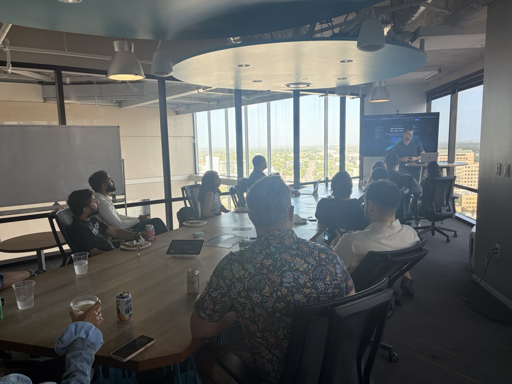

- AI bootcamps come in three kinds: programs where you build AI tools for the job you already have, programs that train you to become an AI engineer, and business school programs on AI strategy. Pick the kind before you compare prices.
- Tuition on this list runs from $1,500 for a one-day workshop in Manhattan to $24,500 for MIT Sloan's 10-day AI Executive Academy in Cambridge.
- Most programs here take people with no coding background. Deep Atlas and Fullstack Academy expect some programming or math.
- Length runs from one day to six months. Short in-person programs mean stepping away from work; longer online ones fit around it.
In 2012 I put about $10K on a credit card to go to a code school in Chicago, so I wouldn't have to ask my parents for the money. A year later I co-founded MakerSquare in Austin. After Hack Reactor bought us, I ran its online sales. So I've been the student, the founder, and the person selling the seats, and in all three jobs I got the same question: which bootcamp should I do?
The answer depends on what you want to do afterward, because "AI bootcamp" now covers three different products. Some programs teach you to build AI tools for the job you already have. Some train you to become an AI engineer. Business schools sell short programs on AI strategy for executives. Below are 14 programs across all three, online and in person, so you can pick the kind first and then compare price and length.
How I built this list. Every price, length, and audience line comes from the program's own page. My co-founder Ravi checked the in-person programs on November 3, 2026, and I rechecked all of them, plus the online ones, on November 17. Links are in the sources at the bottom. There are no affiliate links. I run growth at MakerSquare, so it's on the list, and I've described it the same way as the others.
The best AI bootcamps at a glance
| Program | Kind | Format | Length | Tuition |
|---|---|---|---|---|
| MakerSquare Immersive Our program | Build for your job | In person, Austin | 2 weeks, full-time | $3,999 |
| TripleTen AI Automation | Build for your job | Online, part-time | 4 months, about 20 hrs/week | From $5,950 |
| BrainStation AI Certification | Build for your job | Live online, or New York, Toronto, London | 5 weeks, 3 hrs/week | On request |
| Georgia Tech Scheller AI for Business | Build for your job | In person, Atlanta | 3 days | $2,495 |
| FAU Certificate in AI in Business | Build for your job | Boca Raton or live online | 3 days | $2,495 |
| Deep Atlas Immersive | Become an AI engineer | In person, San Francisco or New York | 1 week, full-time | $4,499 |
| Fullstack Academy AI & Machine Learning | Become an AI engineer | Live online, evenings | 23 weeks | $4,995 upfront ($9,995 list) |
| MIT Sloan AI Executive Academy | AI strategy for leaders | In person, Cambridge, MA | 10 days | $24,500 |
| Stanford GSB AI program | AI strategy for leaders | In person, Stanford, CA | 1 week | $18,500 (incl. lodging, meals) |
| Kellogg Leading with AI | AI strategy for leaders | In person, Chicago | 4 days | $12,500 |
| Columbia Leadership Intelligence in the Era of AI | AI strategy for leaders | In person, New York | 4 days | $10,550 |
| Berkeley Haas AI for Executives | AI strategy for leaders | In person, Berkeley, CA | 3 days | $6,500 |
| Wharton Generative AI and Business Transformation | AI strategy for leaders | In person, Philadelphia | 4 days | On request |
| Stony Brook AI for Business workshop | AI strategy for leaders | In person, New York | 1 day | $1,500 |
The table is grouped by kind, not ranked. These programs are built for different people, so the sections below say who each one fits.
AI bootcamps where you build tools for your own job
These are closest to what most people mean by "bootcamp." Most of the time goes to hands-on work, no coding background is required, and you leave with something running.

Our programMakerSquare Immersive (Austin, TX)
- 2 weeks in person
- Capital Factory, Austin
- $3,999
- No coding needed
Format: two weeks in person at Capital Factory in downtown Austin, Monday to Friday, 9am to 3pm. Next cohort: January 11 to 22, 2027, with enrollment closing January 4.
This is our program. It's built for non-technical professionals: operators, founders, marketers, lawyers, finance people. Each person works on a problem from their own job and ships three things:
- A live website on a real URL
- A working AI agent that does a real task
- An automated workflow that runs without you
Then they demo it at a public Demo Day at the end of week two, like the one in the photo. Our student projects page shows what Cohorts 1 and 2 built and how each tool works. Housing is not included. When enough out-of-town students enroll in a cohort, we help arrange housing for them; the housing page has the details.
Best for: people who want to build AI tools for their own work and can step away for two weeks.
TripleTen AI Automation (online)
Format: four months, part-time and fully online, about 20 hours a week. Tuition: from $5,950 upfront, with monthly and pay-later options.
TripleTen says the course has no prerequisites and that 80% of its students come from non-tech backgrounds. It starts with prompting and no-code tools like Zapier and Make, then moves to APIs, webhooks, AI agents, and robotic process automation with UiPath, and ends with a capstone project.
It is built for career changers. Career coaching is included, and TripleTen offers a tuition refund if you do not have a relevant job 10 months after graduating, with conditions in its terms of use.
Best for: people who want to move into an AI automation job and need to study around a full-time schedule.
BrainStation Artificial Intelligence Certification (online, New York, Toronto, London)
Format: five weeks, three hours of live instruction a week, online or in person. Tuition: not listed; you contact BrainStation to reserve a date, and it mentions financing and partial scholarships.
BrainStation says no coding or data science experience is needed and that the course is about applying AI tools, not building models. Topics run from prompt engineering to AI workflows, agents, and no-code automation with tools like Make. It offers an employer sponsorship package with a syllabus and an expense justification letter for people asking their company to pay.
Best for: professionals who want a short, structured grounding in AI tools without leaving work.
Georgia Tech Scheller AI for Business (Atlanta, GA)
Format: three days on campus at the Scheller College of Business. Tuition: $2,495. Next dates: March 9 to 11, 2027, and September 7 to 9, 2027.
Georgia Tech says no technical background is required. The schedule mixes sessions on generative AI, privacy, regulation, and robotics in business with an experiential workshop and project report-outs on the last day. It sits between a strategy seminar and a hands-on course.
Best for: professionals in the Southeast who want a short, affordable grounding in AI with some hands-on time.
FAU Certificate in Artificial Intelligence in Business (Boca Raton, FL)
Format: three days, 8:30am to 4pm, on campus or live virtual. Tuition: $2,495, or $2,245.50 if you register and pay by December 31, 2026. Next dates: March 1 to 3, 2027.
Florida Atlantic University runs each session both on campus and online, so choose the campus option if in-person is the point. The course is aimed at mid-level managers through executives, and FAU says no coding experience is required. Labs include looking at AI tools, understanding APIs, and building a virtual assistant.
Best for: South Florida professionals who want a broad AI survey with some labs, close to home.
AI bootcamps that train you to become an AI engineer
These are for people who want AI engineering to be their job. Expect to write code from the first week.
Deep Atlas Immersive (San Francisco or New York)
Format: one full-time week in person, Saturday to Wednesday, 9am to 6:30pm. Tuition: $4,499. Next cohorts: December 5 in San Francisco and January 23 in New York.
Deep Atlas is written for professional software engineers who want to move into applied AI. Its page says the typical applicant has several years of engineering experience, and people from other roles do well "if they're competent programmers." The in-person week focuses on agentic AI engineering. The rest of its machine learning curriculum is self-paced, before or after the week.
Best for: engineers who already code and want a fast, intense week on building AI systems.
Fullstack Academy AI & Machine Learning Bootcamp (online)
Format: 23 weeks, live online, Monday, Wednesday, and Thursday from 8 to 11pm Eastern. Tuition: $4,995 if paid upfront or $5,995 in installments, from a $9,995 list price. Next cohort: December 7, 2026 to May 27, 2027; apply by November 20.
The curriculum covers Python, machine learning, generative and agentic AI, and MLOps across 25+ projects, with 1:1 career coaching. The page says no prior tech experience is needed, but its admissions section asks for some programming or intermediate math (linear algebra, probability, and statistics).
Best for: career changers with some math or coding who want an AI or machine learning job and can study three evenings a week for six months.
University executive programs on AI strategy
These are run by business schools for managers and executives. Expect faculty lectures, case studies, group work, and peers at a similar career stage. You leave with frameworks and a plan more often than with a working tool. Several review each registration before confirming a seat.
MIT Sloan AI Executive Academy (Cambridge, MA)
Format: 10 days on the MIT campus over two weeks, 7 to 11 hours a day. Tuition: $24,500 for January 18 to 29, 2027. The June 7 to 18, 2027 session is listed at $25,900.
A joint program from MIT Sloan and the Schwarzman College of Computing. It covers both the technical and business sides of AI and includes hands-on workshops and a capstone on the last day. Completing it earns an MIT Sloan Executive Certificate in Digital Business. MIT says it is designed for senior executives and experienced leaders in technical or non-technical roles.
Best for: senior leaders with a large budget who want the deepest university option on this list.
Stanford GSB, Harnessing AI for Breakthrough Innovation and Strategic Impact (Stanford, CA)
Format: one week in person on the Stanford campus. Tuition: $18,500, which includes private accommodations, all meals, and course materials. Next dates: April 4 to 9, 2027, then July 11 to 16 and November 7 to 12, 2027.
Faculty come from the business school, the Institute for Human-Centered AI, engineering, law, and medicine. Stanford describes it as non-technical and says it is ideal for people with little or no technical AI expertise. Seats are confirmed on a rolling basis.
Best for: senior executives deciding where AI investment makes sense. It is the only program on this list where the fee covers lodging, so the gap with cheaper options is smaller than the tuition suggests.
Kellogg Leading with AI (Chicago, IL)
Format: four days at Wieboldt Hall on Northwestern's Chicago campus. Tuition: $12,500, not including accommodations. Next dates: April 12 to 15, 2027.
Formerly called Leading with Advanced Analytics and Artificial Intelligence, and the content still leans toward analytics. You learn to tell good analysis from bad, run a predictive analytics simulation, and plan how to build AI and analytics teams.
Best for: senior and functional leaders who manage data and AI teams and need to judge their work.
Columbia Leadership Intelligence in the Era of AI (New York, NY)
Format: four days in person at Columbia's Manhattanville campus. Tuition: $10,550. Next dates: May 24 to 27, 2027.
This one is about decisions more than technology. It teaches Columbia's Quantitative Intuition framework for making calls with incomplete data, with hands-on exercises using AI tools and a decision-making simulation. It is open to executives at all levels.
Best for: leaders whose problem is too much data and too few clear decisions.
Berkeley Haas AI for Executives (Berkeley, CA)
Format: three days at the Haas School of Business, about 8.5 hours a day. Tuition: $6,500. Next dates: March 29 to 31, 2027.
Covers agentic AI systems, how to drive AI adoption inside an organization, and the ethical questions that come with it. Berkeley says the faculty director updates the program for every cohort, and it includes hands-on AI and strategy exercises.
Best for: leaders who want a short, current strategy program in the Bay Area at about half the price of the longer ones.
Wharton Generative AI and Business Transformation (Philadelphia, PA)
Format: four days in Philadelphia. Tuition: no longer shown on the program page, which now asks you to contact Wharton for dates and fees. It was listed at $13,500 when we checked on November 3, 2026.
Led by faculty from the Wharton AI and Analytics Initiative. Sessions mix lectures, group activities, case studies, and industry panels, with topics running from large language models and prompt engineering to organizational adoption and AI governance. Wharton names C-suite leaders, product, marketing, sales, and strategy executives, and consultants as the audience.
Best for: executives who need to set a company-wide generative AI plan.
Stony Brook AI for Business: An Executive Workshop (New York, NY)
Format: one day, 8:30am to 5:30pm, at the SUNY Global Center on East 55th Street in Manhattan. Tuition: $1,500, or $1,200 each for three or more people from one company. Seats are capped at 30. Check Stony Brook's site for the next date.
Stony Brook is direct about what this is. You will not learn to code or do hands-on development. You will leave with a shortlist of AI opportunities for your organization and a written 90-day plan with named owners. Expect 45 to 60 minutes of pre-work.
Best for: VPs and directors in the New York area who need an AI plan and can spare one day, not a week.
If you would rather start free and on your own
Free, self-paced courses from DeepLearning.AI, fast.ai, and Coursera's audit options are a good way to find out whether AI matters for your work before you pay for anything. They are not bootcamps: there is no cohort, no schedule, and no one reviewing your work. Few people finish them. In Harvard and MIT's study of their first year of open online courses, about 5% of registrants earned a certificate.
How to choose an AI bootcamp
Start with what you want to be able to do when you finish. If the answer is "decide what my company should do about AI," a business school program fits. If it is "build the tool myself," pick a build program. If it is "get hired as an AI engineer," pick an engineering track. The three goals call for different programs.
Then check these five things on the program's own page:
- Prerequisites. Deep Atlas expects you to program, and Fullstack Academy asks for some programming or math. Most of the others say no technical background is needed.
- Share of hands-on time. Read the sample schedule. Lectures and panels are useful, but they do not leave you with a working tool.
- What you leave with. A certificate, a 90-day plan, a portfolio, or something deployed. Programs say this plainly if you look.
- Weekly hours. A part-time online program asks for 3 to 20 hours a week for months. A full-time in-person one asks for days or weeks away from your job. Pick the one you can finish.
- Whether in-person is the only format. Some schools sell the same session online and on campus. If the room is the reason you are going, make sure you are booking the room.
What an AI bootcamp costs beyond tuition
For an online program, the extra cost is your time: TripleTen's 20 hours a week for four months adds up to about 320 hours of evenings and weekends. For an in-person program, budget for the whole trip:
Tuition + travel + lodging + meals + time away from work.
Lodging is the biggest swing. Stanford's $18,500 includes private accommodations and all meals. Kellogg's $12,500 does not include accommodations. At MakerSquare, tuition is $3,999, and you also pay roughly $15 to $30 in AI service fees during the program plus your own housing for two weeks. Length matters too. A three-day program means two or three hotel nights. A two-week program means two weeks of rent somewhere.
What you get for that spend is time with no other job to do. You are not checking in between meetings or watching a recording at 10pm. For many people that focus is the reason to go in person at all. If you cannot step away for the length of a program, a part-time online one is the better choice, even if it takes longer.
One practical step before you book: confirm the dates are still open and the price has not changed. Program pages update often, and the details above were current on November 17, 2026.
Stuck between two programs? Email me at shaan@makersquare.ai, tell me which two and what you want to build, and I'll give you my honest take, even if it isn't us. If it is us: MakerSquare is two weeks in person in Austin, $3,999, no coding background required, and the next cohort starts January 11, 2027.